Сравнительные исследования кривых намагничивания (петель гистерезиса) ряда
типоразмеров кольцевых сердечников из различных магнитомягких материалов
1. Введение
Целью работы являлось изучение возможности использования доступных кольцевых магнитомягких сердечников в качестве элемента феррозонда - первичного преобразователя феррозондового магнитометра [7, 10, 12]. Несмотря на более низкую чувствительность вследствие высокого значения размагничивающего фактора, а также повышенную чувствительность к перекрестным магнитным полям, использование кольцевого сердечника с равномерно распределенной обмоткой возбуждения зачастую является предпочтительным, так как дает ряд преимуществ: замкнутая симметричная однородная магнитная цепь, позволяющая получить более высокую напряженность и однородность намагничивающего поля при заданной магнитодвижущей силе (МДС), а также достаточно низкий уровень шумов, возможность сдвига сигнала для подстройки нулевого уровня посредством механического вращения кольцевого сердечника с обмоткой возбуждения вокруг своей оси внутри сигнальной катушки, возможность построения двухкомпонентных измерительных схем на одном сердечнике, высокая технологичность процесса намотки катушек [1, 2, 4, 5].
Основные критерии выбора материала сердечника феррозонда [3, 4]:
Геометрические
характеристики кольцевого сердечника могут быть представлены следующими
параметрами (рис. 1.1):
Внутренний диаметр (диаметр отверстия) D1
Внешний диаметр D2
Высота H
Рис. 1.1. Геометрические параметры кольцевого сердечника: D1 – внутренний диаметр (диаметр отверстия), D2 – внешний диаметр, H – высота.
Геометрические параметры кольца определяются обозначением его типоразмера, например, для типоразмера К10х6х3 D1 = 6 мм, D2 = 10 мм, H = 3 мм. За типоразмером следует обозначение начальной магнитной проницаемости и состава, например, 3000НМ – марганец-цинковый феррит с начальной магнитной проницаемостью 3000. Проводились испытания различных кольцевых сердечников – ферритовых колец К10х6х3 3000НМ и К12х8х3 2000НМ (с отжигом и без отжига), пермаллоевых (с отжигом и без отжига) и из аморфной ленты на основе кобальта (с отжигом и без отжига).
2. Схема испытаний
Схема испытаний приведена на рис. 2.1.
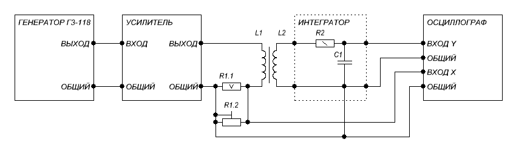
Рис. 2.1. Схема для снятия кривых намагничивания (петель гистерезиса) кольцевых сердечников.
На испытуемый образец наматываются две обмотки. L1 – обмотка возбуждения, с ее помощью внутри образца создается переменное магнитное поле. На обмотку возбуждения подается усиленное с помощью усилителя [10] напряжение синусоидальной формы с генератора сигналов Г3-118. Обмотка L2 – сигнальная. Напряжение с ее выхода, прямо пропорциональное скорости изменения магнитной индукции внутри образца, подается на интегратор, а с него – на вход Y осциллографа UTD2102CEL-R. Цепь параллельно включенных резисторов R1.1 и R1.2 выполняет роль датчика тока. Напряжение с нее, прямо пропорциональное напряженности магнитного поля внутри образца, подается на вход X осциллографа. Коэффициент преобразования датчика тока можно подстраивать с помощью переменного резистора R1.2. Суммарное сопротивление R1 цепи R1.1 и R1.2 определяется по формуле параллельного включения сопротивлений:

Роль интегратора в самом простом исполнении может выполнять RC-цепь (R2C1), включенная по схеме фильтра нижних частот (ФНЧ). Выбор частоты среза ФНЧ определяется частотой измерений. Испытательные частоты должны соответствовать рабочему диапазону обмотки возбуждения феррозонда: 1 кГц, 2 кГц, 5 кГц, 10 кГц, 15 кГц, 20 кГц, поэтому желательно выбрать частоту среза ФНЧ ниже 100 Гц. Частота среза fC RC-цепи ФНЧ определяется по формуле:
Отсюда при заданном значении частоты среза fC и величине сопротивления R можно найти емкость C:
Или, наоборот, через частоту среза и емкость вычислить требуемое сопротивление:
Например, для цепи ФНЧ R2C1 при R2 = 1.5 кОм (сопротивление измерено мультиметром APPA-107N) и C1 = 5 мкФ (емкость измерена LC-метром VC6243 на частоте 1000 Гц):

Резистор R1.1 имеет сопротивление 15 Ом, а подстроечный резистор R1.2 – 150 Ом, при этом максимальное сопротивление цепи датчика тока будет составлять R1 = 150 ∙ 15/(150 + 15) ≈ 13.6 Ом. Для удобства снятия показаний суммарное сопротивление цепи датчика тока в Омах должно быть равно напряженности магнитного поля в кольцевом сердечнике в Эрстедах при возбуждающем токе в 1 А.
3. Теоретическая часть
Напряженность возбуждаемого обмоткой, содержащей NE витков, с током I магнитного поля HE внутри кольца может быть определена по формуле:
Сигнальная обмотка, содержащая NS витков, генерирует электрический сигнал, электродвижущая сила (ЭДС) которого определяется законом Фарадея [8, 13]:

В предположении, что магнитная индукция B изменяется по гармоническому закону B = B0 cos w t (что является довольно грубым приближением), где B0 – амплитуда магнитной индукции, w – циклическая частота, t – время:

Амплитуда ЭДС E0:

Отсюда:

После прохождения через ФНЧ уровень сигнала U снижается линейно с частотой (когда частота существенно больше частоты среза ФНЧ):

Для амплитуд без учета фазовых сдвигов:
Тогда, выражая амплитуду магнитной индукции B0 через амплитуду напряжения на выходе ФНЧ U0:

С учетом того, что на частотах существенно выше частоты среза ФНЧ емкостное сопротивление фильтра существенно меньше активного, можно это выражение упростить:

С помощью данной формулы можно перевести цену деления измерителя напряжений (вольтметра, осциллографа) в единицы магнитной индукции.
При максимальных значениях возбуждающего тока получаемые значения B0 можно рассматривать, как индукцию насыщения кольцевого образца BS. Она может быть выражена через максимальное значение сигнала по оси Y осциллографа US:

Или для конкретного случая RC = R2C1:

С учетом соотношения между магнитной индукцией B и напряженностью магнитного поля HE в образце (без учета размагничивающего фактора, который в магнитомягком кольце при кольцевом возбуждении, как правило, невелик):
где m0 = 4 p ∙ 10-7 Гн/м – магнитная постоянная, а m – магнитная проницаемость материала образца, можно вычислить магнитную проницаемость для участка петли гистерезиса, где изменению напряженности возбуждающего поля DHE соответствует изменение магнитной индукции DB:
В качестве DB и DHE можно взять разницу значений магнитной индукции и напряженности магнитного поля, соответствующих вершинам петли гистерезиса, когда достигается состояние магнитного насыщения образца.
Если магнитная индукция измеряется в Гауссах, а напряженность магнитного поля в Эрстедах (система СГС), то магнитная проницаемость может быть найдена как отношение приращения магнитной индукции к вызвавшему его приращению напряженности магнитного поля.
4. Кольцо типоразмера К10х6х3 из магнитомягкого феррита 3000НМ без отжига
На кольце типоразмера К10х6х3 из магнитомягкого феррита 3000НМ намотана обмотка возбуждения L1 20 витков проводом ПЭВ-2 0.5 мм индуктивностью 286 мкГн и сигнальная обмотка L2 20 витков проводом ПЭВ-2 0.45 мм индуктивностью 287 мкГн. Индуктивность измерена LC-метром VC6243 на частоте 1 кГц.
Напряженность возбуждаемого обмоткой, содержащей 20 витков, с током I магнитного поля HE внутри кольца К10х6х3 (вдоль средней линии) может быть определена по формуле:
Например, при токе 1 А напряженность магнитного поля HE ≈ 796 А/м.≈ 10 Э. Если взять резистор R1 сопротивлением 10 Ом, то при токе 1 А на нем будет падать напряжение 10 В, т. е. 1 В напряжения на шкале осциллографа будет соответствовать 1 Э напряженности магнитного поля (или 79.6 А/м).
Цепь ФНЧ: R2 = 1.5 кОм (сопротивление измерено мультиметром APPA-107N), C1 = 5 мкФ (емкость измерена LC-метром VC6243 на частоте 1 кГц).
Кривые намагничивания кольца К10х6х3 3000НМ для ряда частот 1 кГц, 2 кГц, 5 кГц, 10 кГц, 15 кГц, 20 кГц представлены на рис. 4.1 – 4.7.
Рис. 4.1. Кривая намагничивания кольца К10х6х3 3000НМ на частоте 1 кГц. Цена деления по горизонтали 0.5 Э ≈ 39.8 А/м. Цена деления по вертикали 0.125 Тл. Коэрцитивная сила по индукции HCB ≈ 0.2 Э ≈ 15.9 А/м.
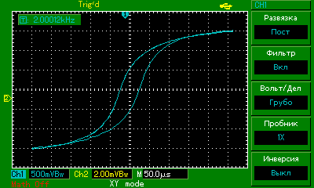
Рис. 4.2. Кривая намагничивания кольца К10х6х3 3000НМ на частоте 2 кГц. Цена деления по горизонтали 0.5 Э ≈ 39.8 А/м. Цена деления по вертикали 0.125 Тл. Коэрцитивная сила по индукции HCB ≈ 0.25 Э ≈ 19.9 А/м.
Рис. 4.3. Кривая намагничивания кольца К10х6х3 3000НМ на частоте 5 кГц. Цена деления по горизонтали 0.5 Э ≈ 39.8 А/м. Цена деления по вертикали 0.125 Тл. Коэрцитивная сила по индукции HCB ≈ 0.3 Э ≈ 23.9 А/м.
Рис. 4.4. Кривая намагничивания кольца К10х6х3 3000НМ на частоте 10 кГц. Цена деления по горизонтали 0.5 Э ≈ 39.8 А/м. Цена деления по вертикали 0.125 Тл. Коэрцитивная сила по индукции HCB ≈ 0.3 Э ≈ 23.9 А/м.
Рис. 4.5. Кривая намагничивания кольца К10х6х3 3000НМ на частоте 15 кГц. Цена деления по горизонтали 0.5 Э ≈ 39.8 А/м. Цена деления по вертикали 0.125 Тл. Коэрцитивная сила по индукции HCB ≈ 0.35 Э ≈ 27.9 А/м.
Рис. 4.6. Кривая намагничивания кольца К10х6х3 3000НМ на частоте 20 кГц. Цена деления по горизонтали 0.5 Э ≈ 39.8 А/м. Цена деления по вертикали 0.125 Тл. Коэрцитивная сила по индукции HCB ≈ 0.35 Э ≈ 27.9 А/м.
Рис. 4.7. Кривая намагничивания кольца К10х6х3 3000НМ на частоте 2 кГц, близкая к предельной. Цена деления по горизонтали 2 Э ≈ 159.2 А/м. Цена деления по вертикали 0.125 Тл. Сигнал на выходе ФНЧ US ≈ 6.8 мВ.
Индукция насыщения образца BS:

Для US = 6.8 мВ, R2 = 1.5 кОм, C1 = 5 мкФ, NS = 20 витков, H = 3 мм, D2 = 10 мм, D1 = 6 мм:
С увеличением рабочей частоты с 1 кГц до 20 кГц значение коэрцитивной силы возрастает с 0.2 Э до 0.35 Э. Также возрастает напряженность поля, требуемая для достижения насыщения сердечника. На частоте 10 кГц она должна быть не менее 2.5 Э, что соответствует МДС не менее 5 А ∙ витков. Магнитная проницаемость на частоте 2 кГц m ≈ 3000 (измеренное значение соответствует обозначению марки кольца).
5. Кольцо типоразмера К12х8х3 из магнитомягкого феррита 2000НМ без отжига
На кольце типоразмера К12х8х3 из магнитомягкого феррита 2000НМ намотана обмотка возбуждения L1 25 витков проводом ПЭВ-2 0.41 мм индуктивностью 310 мкГн и сигнальная обмотка L2 25 витков многожильным проводом в ПВХ-изоляции сечением примерно 0.15 мм2 индуктивностью 308 мкГн. Индуктивность измерена LC-метром VC6243 на частоте 1 кГц.
Напряженность возбуждаемого обмоткой, содержащей 25 витков, с током I магнитного поля HE внутри кольца К12х8х3 (вдоль средней линии) может быть определена по формуле:
Например, при токе 1 А напряженность магнитного поля HE ≈ 796 А/м.≈ 10 Э. Если взять резистор R1 сопротивлением 10 Ом, то при токе 1 А на нем будет падать напряжение 10 В, т. е. 1 В напряжения на шкале осциллографа будет соответствовать 1 Э напряженности магнитного поля (или 79.6 А/м).
Цепь ФНЧ: R2 = 1.5 кОм (сопротивление измерено мультиметром APPA-107N), C1 = 5 мкФ (емкость измерена LC-метром VC6243 на частоте 1 кГц).
Кривые намагничивания кольца К12х8х3 2000НМ для ряда частот 1 кГц, 2 кГц, 5 кГц, 10 кГц, 15 кГц, 20 кГц, 40 кГц представлены на рис. 5.1 – 5.8.
Рис. 5.1. Кривая намагничивания кольца К12х8х3 2000НМ на частоте 1 кГц. Цена деления по горизонтали 0.5 Э ≈ 39.8 А/м. Цена деления по вертикали 0.1 Тл. Коэрцитивная сила по индукции HCB ≈ 0.15 Э ≈ 11.9 А/м.
Рис. 5.2. Кривая намагничивания кольца К12х8х3 2000НМ на частоте 2 кГц. Цена деления по горизонтали 0.5 Э ≈ 39.8 А/м. Цена деления по вертикали 0.1 Тл. Коэрцитивная сила по индукции HCB ≈ 0.2 Э ≈ 15.9 А/м.
Рис. 5.3. Кривая намагничивания кольца К12х8х3 2000НМ на частоте 5 кГц. Цена деления по горизонтали 0.5 Э ≈ 39.8 А/м. Цена деления по вертикали 0.1 Тл. Коэрцитивная сила по индукции HCB ≈ 0.2 Э ≈ 15.9 А/м.
Рис. 5.4. Кривая намагничивания кольца К12х8х3 2000НМ на частоте 10 кГц. Цена деления по горизонтали 0.5 Э ≈ 39.8 А/м. Цена деления по вертикали 0.1 Тл. Коэрцитивная сила по индукции HCB ≈ 0.25 Э ≈ 19.9 А/м.
Рис. 5.5. Кривая намагничивания кольца К12х8х3 2000НМ на частоте 15 кГц. Цена деления по горизонтали 0.5 Э ≈ 39.8 А/м. Цена деления по вертикали 0.1 Тл. Коэрцитивная сила по индукции HCB ≈ 0.25 Э ≈ 19.9 А/м.
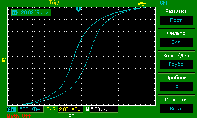
Рис. 5.6. Кривая намагничивания кольца К12х8х3 2000НМ на частоте 20 кГц. Цена деления по горизонтали 0.5 Э ≈ 39.8 А/м. Цена деления по вертикали 0.1 Тл. Коэрцитивная сила по индукции HCB ≈ 0.3 Э ≈ 23.9 А/м.
Рис. 5.7. Кривая намагничивания кольца К12х8х3 2000НМ на частоте 40 кГц. Цена деления по горизонтали 0.5 Э ≈ 39.8 А/м. Цена деления по вертикали 0.1 Тл. Коэрцитивная сила по индукции HCB ≈ 0.4 Э ≈ 31.8 А/м.
Рис. 5.8. Кривая намагничивания кольца К12х8х3 2000НМ на частоте 2 кГц, близкая к предельной. Цена деления по горизонтали 2 Э ≈ 159.2 А/м. Цена деления по вертикали 0.25 Тл. Сигнал на выходе ФНЧ US ≈ 8.5 мВ.
Индукция насыщения образца BS:

Для US = 8.5 мВ, R2 = 1.5 кОм, C1 = 5 мкФ, NS = 25 витков, H = 3 мм, D2 = 12 мм, D1 = 8 мм:
С увеличением рабочей частоты с 1 кГц до 20 кГц значение коэрцитивной силы возрастает с 0.15 Э до 0.3 Э и далее до 0.4 Э на частоте 40 кГц. Также возрастает напряженность поля, требуемая для достижения насыщения сердечника. На частоте 10 кГц она должна быть не менее 2 Э, что соответствует МДС не менее 5 А ∙ витков. Магнитная проницаемость на частоте 2 кГц m ≈ 3000 (измеренное значение не соответствует обозначению марки кольца, последнее, впрочем, может оказаться ошибочным).
С увеличением внешнего диаметра кольца при сохранении площади поперечного сечения коэрцитивная сила уменьшается. Также уменьшается напряженность магнитного поля, требуемого для достижения насыщения сердечника, хотя за счет увеличения длины средней линии кольца МДС для насыщения сердечника остается прежней.
В качестве элемента феррозонда кольцо К12х8х3 2000НМ выглядит предпочтительнее кольца К10х6х3 3000НМ.
6. Кольцо типоразмера К12х8х3 из магнитомягкого феррита 2000НМ с отжигом
Отжиг кольца К12х8х3 2000НМ произведен с помощью газовой горелки в атмосфере окружающей среды. Вначале производился нагрев кольца до красного каления, а затем – отжиг в течение примерно 1 минуты. Остывание кольца происходило в нормальных условиях естественного охлаждения.
На отожженном кольце типоразмера К12х8х3 из магнитомягкого феррита 2000НМ намотана обмотка возбуждения L1 25 витков проводом ПЭВ-2 0.3 мм индуктивностью 116 мкГн и сигнальная обмотка L2 25 витков многожильным проводом в ПВХ-изоляции сечением примерно 0.15 мм2 индуктивностью 115 мкГн. Индуктивность измерена LC-метром VC6243 на частоте 1 кГц.
Напряженность возбуждаемого обмоткой, содержащей 25 витков, с током I магнитного поля HE внутри кольца К12х8х3 (вдоль средней линии) может быть определена по формуле:
Например, при токе 1 А напряженность магнитного поля HE ≈ 796 А/м.≈ 10 Э. Если взять резистор R1 сопротивлением 10 Ом, то при токе 1 А на нем будет падать напряжение 10 В, т. е. 1 В напряжения на шкале осциллографа будет соответствовать 1 Э напряженности магнитного поля (или 79.6 А/м).
Цепь ФНЧ: R2 = 1.5 кОм (сопротивление измерено мультиметром APPA-107N), C1 = 5 мкФ (емкость измерена LC-метром VC6243 на частоте 1 кГц).
Кривые намагничивания отожженного кольца К12х8х3 2000НМ для ряда частот 1 кГц, 2 кГц, 5 кГц, 10 кГц, 15 кГц, 20 кГц представлены на рис. 6.1 – 6.7.
Рис. 6.1. Кривая намагничивания отожженного кольца К12х8х3 2000НМ на частоте 1 кГц. Цена деления по горизонтали 0.5 Э ≈ 39.8 А/м. Цена деления по вертикали 0.1 Тл. Коэрцитивная сила по индукции HCB ≈ 0.5 Э ≈ 39.8 А/м.
Рис. 6.2. Кривая намагничивания отожженного кольца К12х8х3 2000НМ на частоте 2 кГц. Цена деления по горизонтали 0.5 Э ≈ 39.8 А/м. Цена деления по вертикали 0.1 Тл. Коэрцитивная сила по индукции HCB ≈ 0.55 Э ≈ 43.8 А/м.
Рис. 6.3. Кривая намагничивания отожженного кольца К12х8х3 2000НМ на частоте 5 кГц. Цена деления по горизонтали 0.5 Э ≈ 39.8 А/м. Цена деления по вертикали 0.1 Тл. Коэрцитивная сила по индукции HCB ≈ 0.6 Э ≈ 47.8 А/м.
Рис. 6.4. Кривая намагничивания отожженного кольца К12х8х3 2000НМ на частоте 10 кГц. Цена деления по горизонтали 0.5 Э ≈ 39.8 А/м. Цена деления по вертикали 0.1 Тл. Коэрцитивная сила по индукции HCB ≈ 0.6 Э ≈ 47.8 А/м.
Рис. 6.5. Кривая намагничивания отожженного кольца К12х8х3 2000НМ на частоте 15 кГц. Цена деления по горизонтали 0.5 Э ≈ 39.8 А/м. Цена деления по вертикали 0.1 Тл. Коэрцитивная сила по индукции HCB ≈ 0.65 Э ≈ 51.7 А/м.
Рис. 6.6. Кривая намагничивания отожженного кольца К12х8х3 2000НМ на частоте 20 кГц. Цена деления по горизонтали 0.5 Э ≈ 39.8 А/м. Цена деления по вертикали 0.1 Тл. Коэрцитивная сила по индукции HCB ≈ 0.65 Э ≈ 51.7 А/м.
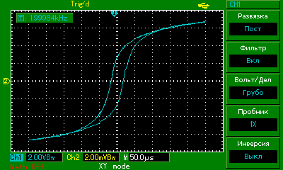
Рис. 6.7. Кривая намагничивания отожженного кольца К12х8х3 2000НМ на частоте 2 кГц, близкая к предельной. Цена деления по горизонтали 2 Э ≈ 159.2 А/м. Цена деления по вертикали 0.1 Тл. Сигнал на выходе ФНЧ US ≈ 6.8 мВ.
Индукция насыщения образца BS:

Для US = 6.8 мВ, R2 = 1.5 кОм, C1 = 5 мкФ, NS = 25 витков, H = 3 мм, D2 = 12 мм, D1 = 8 мм:
Отжиг кольца привел к увеличению коэрцитивной силы, например, на частоте 1 кГц с 0.15 Э до 0.5 Э, а на частоте 10 кГц – с 0.25 Э до 0.6 Э. С увеличением рабочей частоты с 1 кГц до 20 кГц значение коэрцитивной силы возрастает с 0.5 Э до 0.65 Э. Магнитная индукция насыщения в кольце после отжига наоборот уменьшилась с 0.425 Тл до 0.34 Тл. Также уменьшилась и магнитная проницаемость, на частоте 2 кГц m ≈ 920.
Таким образом, можно сделать вывод, что отжиг ферритовых колец, проводимый по достаточно простой технологии, существенно ухудшает их магнитные свойства.
7. Кольцо типоразмера К11х10х5 из пермаллоя без отжига
Для изготовления кольца из пермаллоевой ленты шириной 5 мм толщиной 0.05 мм (марка не известна) была изготовлена пластиковая бобина с прорезью для намотки и щечками. Диаметр намотки 10 мм (внутренний диаметр кольца D1), число витков 10, таким образом толщина намотки кольца составила 0.5 мм (внешний диаметр кольца можно считать равным D2 = 11 мм).
На кольце типоразмера К11х10х5 из пермаллоевой ленты намотана обмотка возбуждения L1 25 витков проводом ПЭВ-2 0.3 мм индуктивностью 51 мкГн и сигнальная обмотка L2 16 витков многожильным проводом в ПВХ-изоляции сечением примерно 0.15 мм2 индуктивностью 29 мкГн. Индуктивность измерена LC-метром VC6243 на частоте 1 кГц.
Напряженность возбуждаемого обмоткой, содержащей 25 витков, с током I магнитного поля HE внутри кольца К11х10х5 (вдоль средней линии) может быть определена по формуле:
Например, при токе 1 А напряженность магнитного поля HE ≈ 758 А/м.≈ 9.52 Э. Если взять резистор R1 сопротивлением 9.52 Ом, то при токе 1 А на нем будет падать напряжение 9.52 В, т. е. 1 В напряжения на шкале осциллографа будет соответствовать 1 Э напряженности магнитного поля (или 79.6 А/м).
Цепь ФНЧ: R2 = 1.5 кОм (сопротивление измерено мультиметром APPA-107N), C1 = 5 мкФ (емкость измерена LC-метром VC6243 на частоте 1 кГц).
Кривые намагничивания кольца К11х10х5 из пермаллоевой ленты для ряда частот 1 кГц, 2 кГц, 5 кГц, 10 кГц, 15 кГц, 20 кГц представлены на рис. 7.1 – 7.7.
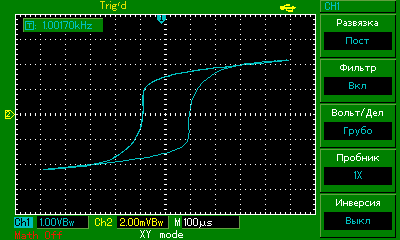
Рис. 7.1. Кривая намагничивания кольца К11х10х5 из пермаллоя на частоте 1 кГц. Цена деления по горизонтали 1 Э ≈ 79.6 А/м. Цена деления по вертикали 0.375 Тл. Коэрцитивная сила по индукции HCB ≈ 0.9 Э ≈ 71.6 А/м.
Рис. 7.2. Кривая намагничивания кольца К11х10х5 из пермаллоя на частоте 2 кГц. Цена деления по горизонтали 1 Э ≈ 79.6 А/м. Цена деления по вертикали 0.375 Тл. Коэрцитивная сила по индукции HCB ≈ 1 Э ≈ 79.6 А/м.
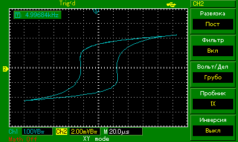
Рис. 7.3. Кривая намагничивания кольца К11х10х5 из пермаллоя на частоте 5 кГц. Цена деления по горизонтали 1 Э ≈ 79.6 А/м. Цена деления по вертикали 0.375 Тл. Коэрцитивная сила по индукции HCB ≈ 1.2 Э ≈ 95.5 А/м.
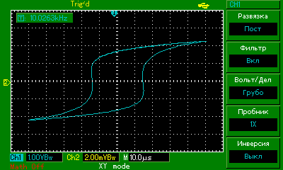
Рис. 7.4. Кривая намагничивания кольца К11х10х5 из пермаллоя на частоте 10 кГц. Цена деления по горизонтали 1 Э ≈ 79.6 А/м. Цена деления по вертикали 0.375 Тл. Коэрцитивная сила по индукции HCB ≈ 1.4 Э ≈ 111.4 А/м.
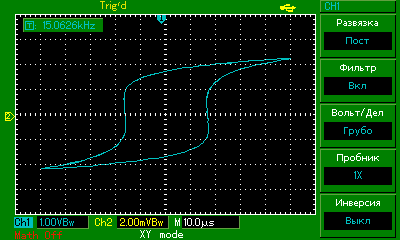
Рис. 7.5. Кривая намагничивания кольца К11х10х5 из пермаллоя на частоте 15 кГц. Цена деления по горизонтали 1 Э ≈ 79.6 А/м. Цена деления по вертикали 0.375 Тл. Коэрцитивная сила по индукции HCB ≈ 1.6 Э ≈ 127.4 А/м.
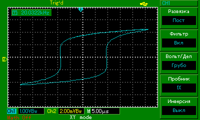
Рис. 7.6. Кривая намагничивания кольца К11х10х5 из пермаллоя на частоте 20 кГц. Цена деления по горизонтали 1 Э ≈ 79.6 А/м. Цена деления по вертикали 0.375 Тл. Коэрцитивная сила по индукции HCB ≈ 1.8 Э ≈ 143.3 А/м.
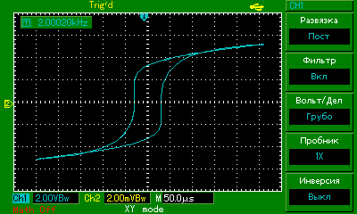
Рис. 7.7. Кривая намагничивания кольца К11х10х5 из пермаллоя на частоте 2 кГц, близкая к предельной. Цена деления по горизонтали 2 Э ≈ 159.2 А/м. Цена деления по вертикали 0.375 Тл. Сигнал на выходе ФНЧ US ≈ 5.2 мВ.
Индукция насыщения образца BS:

Для US = 5.2 мВ, R2 = 1.5 кОм, C1 = 5 мкФ, NS = 16 витков, H = 5 мм, D2 = 11 мм, D1 = 10 мм:
Кольцо из пермаллоя имеет существенно большие значения коэрцитивной силы по сравнению с ферритовыми кольцами. С увеличением рабочей частоты с 1 кГц до 20 кГц значение коэрцитивной силы возрастает с 0.9 Э до 1.8 Э. Напряженность поля, требуемая для достижения насыщения сердечника, на частоте 2 кГц должна быть не менее 6 Э, что соответствует МДС не менее 16 А ∙ витков. Магнитная проницаемость на частоте 2 кГц m ≈ 2500.
Данный тип пермаллоевой ленты имеет существенно худшие магнитные характеристики по сравнению с ферритовыми кольцами (более предпочтительным выглядит кольцо К12х8х3 2000НМ). Вряд ли в конкретном случае отжиг позволит значительно улучшить свойства материала.
8. Кольцо типоразмера К12х11х5 из отожженного пермаллоя
Для изготовления кольца из пермаллоевой ленты шириной 5 мм толщиной 0.05 мм была изготовлена бобина с прорезью для намотки и щечками. Диаметр намотки 11 мм (внутренний диаметр кольца D1), число витков 10, таким образом толщина намотки кольца составила 0.5 мм (внешний диаметр кольца можно считать равным D2 = 12 мм).
Пермаллоевая лента была подвергнута отжигу с помощью газовой горелки в атмосфере окружающей среды. Вначале производился нагрев ленты требуемой для намотки кольца длины до красного каления, а затем – отжиг в течение примерно 10 секунд. Остывание ленты происходило в нормальных условиях естественного охлаждения. После остывания отожженная лента была намотана на бобину (10 витков).
На кольце типоразмера К12х11х5 из отожженной пермалллоевой ленты намотана обмотка возбуждения L1 25 витков проводом ПЭВ-2 0.3 мм индуктивностью 49 мкГн и сигнальная обмотка L2 16 витков провода ПЭВ-2 0.3 мм индуктивностью 30 мкГн. Индуктивность измерена LC-метром VC6243 на частоте 1 кГц.
Напряженность возбуждаемого обмоткой, содержащей 25 витков, с током I магнитного поля HE внутри кольца К12х11х5 (вдоль средней линии) может быть определена по формуле:
Например, при токе 1 А напряженность магнитного поля HE ≈ 692 А/м.≈ 8.69 Э. Если взять резистор R1 сопротивлением 8.69 Ом, то при токе 1 А на нем будет падать напряжение 8.69 В, т. е. 1 В напряжения на шкале осциллографа будет соответствовать 1 Э напряженности магнитного поля (или 79.6 А/м).
Цепь ФНЧ: R2 = 1.5 кОм (сопротивление измерено мультиметром APPA-107N), C1 = 5 мкФ (емкость измерена LC-метром VC6243 на частоте 1 кГц).
Кривые намагничивания кольца К12х11х5 из пермаллоевой ленты для ряда частот 1 кГц, 2 кГц, 5 кГц, 10 кГц, 15 кГц, 20 кГц представлены на рис. 8.1 – 8.7.
Рис. 8.1. Кривая намагничивания кольца К12х11х5 из отожженного пермаллоя на частоте 1 кГц. Цена деления по горизонтали 1 Э ≈ 79.6 А/м. Цена деления по вертикали 0.375 Тл. Коэрцитивная сила по индукции HCB ≈ 1.0 Э ≈ 79.6 А/м.
Рис. 8.2. Кривая намагничивания кольца К12х11х5 из отожженного пермаллоя на частоте 2 кГц. Цена деления по горизонтали 1 Э ≈ 79.6 А/м. Цена деления по вертикали 0.375 Тл. Коэрцитивная сила по индукции HCB ≈ 1.1 Э ≈ 87.6 А/м.
Рис. 8.3. Кривая намагничивания кольца К12х11х5 из отожженного пермаллоя на частоте 5 кГц. Цена деления по горизонтали 1 Э ≈ 79.6 А/м. Цена деления по вертикали 0.375 Тл. Коэрцитивная сила по индукции HCB ≈ 1.3 Э ≈ 103.5 А/м.
Рис. 8.4. Кривая намагничивания кольца К12х11х5 из отожженного пермаллоя на частоте 10 кГц. Цена деления по горизонтали 1 Э ≈ 79.6 А/м. Цена деления по вертикали 0.375 Тл. Коэрцитивная сила по индукции HCB ≈ 1.5 Э ≈ 119.4 А/м.
Рис. 8.5. Кривая намагничивания кольца К12х11х5 из отожженного пермаллоя на частоте 15 кГц. Цена деления по горизонтали 1 Э ≈ 79.6 А/м. Цена деления по вертикали 0.375 Тл. Коэрцитивная сила по индукции HCB ≈ 1.7 Э ≈ 135.3 А/м.
Рис. 8.6. Кривая намагничивания кольца К12х11х5 из отожженного пермаллоя на частоте 20 кГц. Цена деления по горизонтали 1 Э ≈ 79.6 А/м. Цена деления по вертикали 0.375 Тл. Коэрцитивная сила по индукции HCB ≈ 1.8 Э ≈ 143.3 А/м.
Рис. 8.7. Кривая намагничивания кольца К12х11х5 из отожженного пермаллоя на частоте 2 кГц, близкая к предельной. Цена деления по горизонтали 2 Э ≈ 159.2 А/м. Цена деления по вертикали 0.375 Тл. Сигнал на выходе ФНЧ US ≈ 4.8 мВ.
Индукция насыщения образца BS:

Для US = 4.8 мВ, R2 = 1.5 кОм, C1 = 5 мкФ, NS = 16 витков, H = 5 мм, D2 = 12 мм, D1 = 11 мм:
Кольцо из отожженного пермаллоя имеет сходные характеристики с кольцом из неотожженного пермаллоя. Коэрцитивная сила, возможно, несколько повысилась, а магнитная индукция насыщения несколько понизилась, если это, конечно, не связано с погрешностью измерений. Петля гистерезиса стала более гладкой (менее прямоугольной). Магнитная проницаемость на частоте 2 кГц m ≈ 2250 (несколько понизилась).
9. Кольцо типоразмера К14.5х14.9х1 из аморфной ленты на основе кобальта без отжига
Для изготовления кольца из аморфной ленты на основе кобальта шириной 1 мм толщиной 0.02 мм (аналог VAC6025 производства Vacuumschmelze GmbH & Co. KG, примерный состав (CoFe)70(MoSiB)30) была изготовлена дюралюминиевая бобина с прорезью для намотки шириной 1.5 мм и щечками. Диаметр намотки 14.5 мм (внутренний диаметр кольца D1), число витков 10, таким образом толщина намотки кольца составила 0.2 мм (внешний диаметр кольца можно считать равным D2 = 14.9 мм).
На кольце типоразмера К14.5х14.9х1 из аморфной ленты намотана обмотка возбуждения L1 37 витков проводом ПЭЛШО 0.27 мм индуктивностью примерно 55 мкГн и сигнальная обмотка L2 94 витка провода ПЭЛШО 0.27 мм индуктивностью примерно 300 мкГн. Индуктивность измерена LC-метром VC6243 на частоте 1 кГц.
Напряженность возбуждаемого обмоткой, содержащей 37 витков, с током I магнитного поля HE внутри кольца К14.5х14.9х1 (вдоль средней линии) может быть определена по формуле:
Например, при токе 1 А напряженность магнитного поля HE ≈ 801 А/м.≈ 10 Э. Если взять резистор R1 сопротивлением 10 Ом, то при токе 1 А на нем будет падать напряжение 10 В, т. е. 1 В напряжения на шкале осциллографа будет примерно соответствовать 1 Э напряженности магнитного поля (или 79.6 А/м).
Цепь ФНЧ: R2 = 1.5 кОм (сопротивление измерено мультиметром APPA-107N), C1 = 5 мкФ (емкость измерена LC-метром VC6243 на частоте 1 кГц).
Кривые намагничивания кольца К14.9х14.5х1 из аморфной ленты на основе кобальта для ряда частот 1 кГц, 2 кГц, 5 кГц, 10 кГц, 15 кГц, 20 кГц представлены на рис. 9.1 – 9.7.
Рис. 9.1. Кривая намагничивания кольца К14.9х14.5х1 из аморфной ленты на основе кобальта на частоте 1 кГц. Цена деления по горизонтали 0.5 Э ≈ 39.8 А/м. Цена деления по вертикали 0.4 Тл. Коэрцитивная сила по индукции HCB ≈ 0.1 Э ≈ 8 А/м.
Рис. 9.2. Кривая намагничивания кольца К14.9х14.5х1 из аморфной ленты на основе кобальта на частоте 2 кГц. Цена деления по горизонтали 0.5 Э ≈ 39.8 А/м. Цена деления по вертикали 0.4 Тл. Коэрцитивная сила по индукции HCB ≈ 0.15 Э ≈ 12 А/м.
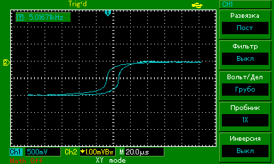
Рис. 9.3. Кривая намагничивания кольца К14.9х14.5х1 из аморфной ленты на основе кобальта на частоте 5 кГц. Цена деления по горизонтали 0.5 Э ≈ 39.8 А/м. Цена деления по вертикали 0.4 Тл. Коэрцитивная сила по индукции HCB ≈ 0.15 Э ≈ 12 А/м.
Рис. 9.4. Кривая намагничивания кольца К14.9х14.5х1 из аморфной ленты на основе кобальта на частоте 10 кГц. Цена деления по горизонтали 0.5 Э ≈ 39.8 А/м. Цена деления по вертикали 0.4 Тл. Коэрцитивная сила по индукции HCB ≈ 0.2 Э ≈ 16 А/м.
Рис. 9.5. Кривая намагничивания кольца К14.9х14.5х1 из аморфной ленты на основе кобальта на частоте 15 кГц. Цена деления по горизонтали 0.5 Э ≈ 39.8 А/м. Цена деления по вертикали 0.4 Тл. Коэрцитивная сила по индукции HCB ≈ 0.25 Э ≈ 20 А/м.
Рис. 9.6. Кривая намагничивания кольца К14.9х14.5х1 из аморфной ленты на основе кобальта на частоте 20 кГц. Цена деления по горизонтали 0.5 Э ≈ 39.8 А/м. Цена деления по вертикали 0.4 Тл. Коэрцитивная сила по индукции HCB ≈ 0.3 Э ≈ 24 А/м.
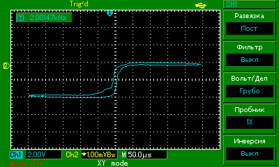
Рис. 9.7. Кривая намагничивания кольца К14.9х14.5х1 из аморфной ленты на основе кобальта на частоте 2 кГц, близкая к предельной. Цена деления по горизонтали 2 Э ≈ 159.2 А/м. Цена деления по вертикали 0.4 Тл. Сигнал на выходе ФНЧ US ≈ 1 мВ.
Индукция насыщения образца BS:

Для US = 1 мВ, R2 = 1.5 кОм, C1 = 5 мкФ, NS = 94 витков, H = 1 мм, D2 = 14.9 мм, D1 = 14.5 мм:
Кольцо из аморфной ленты на основе кобальта шириной 1 мм имеет сопоставимые с ферритовыми кольцами значения коэрцитивной силы и индукции насыщения. С увеличением рабочей частоты с 1 кГц до 20 кГц значение коэрцитивной силы возрастает с 0.1 Э до 0.3 Э. Также возрастает напряженность поля, требуемая для достижения насыщения сердечника, хотя и остается существенно меньше, чем для других типов магнитных материалов. На частоте 1 кГц она должна быть не менее 1 Э (МДС не менее 2 А ∙ витков), а на частоте 10 кГц – не менее 3 Э (МДС не менее 6 А ∙ витков). Магнитная проницаемость на частоте 2 кГц m ≈ 3200 (магнитная индукция 0.32 Тл = 3200 Гс достигается при напряженности магнитного поля 1 Э). При этом крутизна кривой намагничивания в начале координат позволяет сделать вывод о существенно большем значении начальной относительной магнитной проницаемости (на частоте 2 кГц изменение магнитной индукции на 0.32 Тл = 3200 Гс соответствует изменение напряженности магнитного поля на 0.2 Э, т. е. относительная магнитная проницаемость равна 160000).
10. Кольцо типоразмера К14.9х14.5х2 из аморфной ленты на основе кобальта без отжига
Для изготовления кольца из аморфной ленты на основе кобальта шириной 2 мм толщиной 0.02 мм (аналог VAC6025, см. п. 9) также была изготовлена дюралюминиевая бобина с прорезью для намотки шириной примерно 2.2 мм и щечками. Диаметр намотки 14.5 мм (внутренний диаметр кольца D1), число витков 10, таким образом толщина намотки кольца составила 0.2 мм (внешний диаметр кольца можно считать равным D2 = 14.9 мм).
На кольце типоразмера К14.9х14.5х2 из аморфной ленты намотана обмотка возбуждения L1 37 витков проводом ПЭЛШО 0.27 мм индуктивностью 55 мкГн и сигнальная обмотка L2 94 витка провода ПЭЛШО 0.27 мм индуктивностью примерно 350 мкГн. Индуктивность измерена LC-метром VC6243 на частоте 1 кГц.
Напряженность возбуждаемого обмоткой, содержащей 37 витков, с током I магнитного поля HE внутри кольца К14.9х14.5х2 (вдоль средней линии) может быть определена по формуле:
Например, при токе 1 А напряженность магнитного поля HE ≈ 801 А/м.≈ 10 Э. Если взять резистор R1 сопротивлением 10 Ом, то при токе 1 А на нем будет падать напряжение 10 В, т. е. 1 В напряжения на шкале осциллографа будет примерно соответствовать 1 Э напряженности магнитного поля (или 79.6 А/м).
Цепь ФНЧ: R2 = 1.5 кОм (сопротивление измерено мультиметром APPA-107N), C1 = 5 мкФ (емкость измерена LC-метром VC6243 на частоте 1 кГц).
Кривые намагничивания кольца К14.9х14.5х2 из аморфной ленты на основе кобальта для ряда частот 1 кГц, 2 кГц, 5 кГц, 10 кГц, 15 кГц, 20 кГц представлены на рис. 10.1 – 10.7.
Рис. 10.1. Кривая намагничивания кольца К14.9х14.5х2 из аморфной ленты на основе кобальта на частоте 1 кГц. Цена деления по горизонтали 0.5 Э ≈ 39.8 А/м. Цена деления по вертикали 0.2 Тл. Коэрцитивная сила по индукции HCB ≈ 0.1 Э ≈ 8 А/м.
Рис. 10.2. Кривая намагничивания кольца К14.9х14.5х2 из аморфной ленты на основе кобальта на частоте 2 кГц. Цена деления по горизонтали 0.5 Э ≈ 39.8 А/м. Цена деления по вертикали 0.2 Тл. Коэрцитивная сила по индукции HCB ≈ 0.15 Э ≈ 12 А/м.
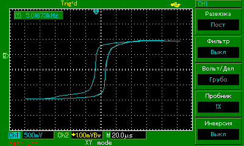
Рис. 10.3. Кривая намагничивания кольца К14.9х14.5х2 из аморфной ленты на основе кобальта на частоте 5 кГц. Цена деления по горизонтали 0.5 Э ≈ 39.8 А/м. Цена деления по вертикали 0.2 Тл. Коэрцитивная сила по индукции HCB ≈ 0.15 Э ≈ 12 А/м.
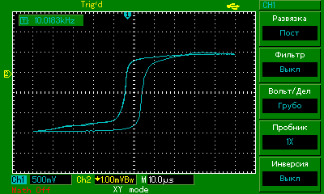
Рис. 10.4. Кривая намагничивания кольца К14.9х14.5х2 из аморфной ленты на основе кобальта на частоте 10 кГц. Цена деления по горизонтали 0.5 Э ≈ 39.8 А/м. Цена деления по вертикали 0.2 Тл. Коэрцитивная сила по индукции HCB ≈ 0.2 Э ≈ 16 А/м.
Рис. 10.5. Кривая намагничивания кольца К14.9х14.5х2 из аморфной ленты на основе кобальта на частоте 15 кГц. Цена деления по горизонтали 0.5 Э ≈ 39.8 А/м. Цена деления по вертикали 0.2 Тл. Коэрцитивная сила по индукции HCB ≈ 0.25 Э ≈ 20 А/м.
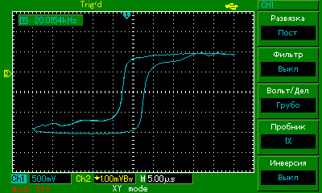
Рис. 10.6. Кривая намагничивания кольца К14.9х14.5х2 из аморфной ленты на основе кобальта на частоте 20 кГц. Цена деления по горизонтали 0.5 Э ≈ 39.8 А/м. Цена деления по вертикали 0.2 Тл. Коэрцитивная сила по индукции HCB ≈ 0.3 Э ≈ 24 А/м.
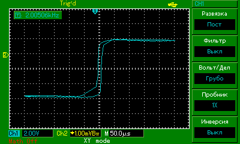
Рис. 10.7. Кривая намагничивания кольца К14.9х14.5х2 из аморфной ленты на основе кобальта на частоте 2 кГц, близкая к предельной. Цена деления по горизонтали 2 Э ≈ 159.2 А/м. Цена деления по вертикали 0.2 Тл. Сигнал на выходе ФНЧ US ≈ 2 мВ.
Индукция насыщения образца BS:

Для US = 2 мВ, R2 = 1.5 кОм, C1 = 5 мкФ, NS = 94 витков, H = 2 мм, D2 = 14.9 мм, D1 = 14.5 мм:
Кольцо из аморфной ленты на основе кобальта шириной 2 мм имеет примерно такие же магнитные свойства, что и кольцо из ленты шириной 1 мм (п. 9). С увеличением рабочей частоты с 1 кГц до 20 кГц значение коэрцитивной силы возрастает с 0.1 Э до 0.3 Э. Возрастает также напряженность поля, требуемая для достижения насыщения сердечника, например, на частоте 1 кГц она должна быть не менее 1 Э (МДС не менее 2 А ∙ витков), а на частоте 10 кГц – не менее 3 Э (МДС не менее 6 А ∙ витков). Магнитная проницаемость на частоте 2 кГц m ≈ 3600 (магнитная индукция 0.36 Тл = 3600 Гс достигается при напряженности магнитного поля 1 Э). Начальная относительная магнитная проницаемость на частоте 2 кГц равна примерно 400000 (изменение магнитной индукции на 0.4 Тл = 4000 Гс соответствует изменению напряженности магнитного поля на 0.1 Э).
Данный тип ленты имеет несколько лучшие магнитные характеристики по сравнению с ферритовыми кольцами (из которых более предпочтительным выглядит кольцо К12х8х3 2000НМ). Возможно, отжиг позволит дополнительно улучшить свойства материала. Дополнительным преимуществом является возможность изготовления феррозондовых колец произвольных типоразмеров, причем достаточно тонких, что обеспечивает пониженное энергопотребление.
11. Кольцо типоразмера К14.9х14.5х1 из аморфной ленты на основе кобальта с отжигом
Для изготовления кольца из аморфной ленты на основе кобальта шириной 1 мм толщиной 0.02 мм (аналог VAC6025) была изготовлена бронзовая бобина с прорезью для намотки и щечками. Диаметр намотки 14.5 мм (внутренний диаметр кольца D1), число витков 10, таким образом толщина намотки кольца составила 0.2 мм (внешний диаметр кольца можно считать равным D2 = 14.9 мм). Начало и конец ленты были закреплены с помощью контактной сварки [6]. Далее был произведен отжиг изготовленного кольца при температуре 270 0C в течение 2-х часов в печи сопротивления [8] с последующим естественным охлаждением до комнатной температуры.
На кольце типоразмера К14.9х14.5х1 из аморфной ленты (после отжига) намотана обмотка возбуждения L1 37 витков проводом ПЭЛШО 0.27 мм индуктивностью 45 мкГн и сигнальная обмотка L2 94 витка провода ПЭЛШО 0.27 мм индуктивностью примерно 240 мкГн. Индуктивность измерена LC-метром VC6243 на частоте 1 кГц.
Напряженность возбуждаемого обмоткой, содержащей 37 витков, с током I магнитного поля HE внутри кольца К14.9х14.5х1 (вдоль средней линии) может быть определена по формуле:
Например, при токе 1 А напряженность магнитного поля HE ≈ 801 А/м.≈ 10 Э. Если взять резистор R1 сопротивлением 10 Ом, то при токе 1 А на нем будет падать напряжение 10 В, т. е. 1 В напряжения на шкале осциллографа будет примерно соответствовать 1 Э напряженности магнитного поля (или 79.6 А/м).
Цепь ФНЧ: R2 = 1.5 кОм (сопротивление измерено мультиметром APPA-107N), C1 = 5 мкФ (емкость измерена LC-метром VC6243 на частоте 1 кГц).
Кривые намагничивания кольца К14.9х14.5х1 из аморфной ленты на основе кобальта для ряда частот 1 кГц, 2 кГц, 5 кГц, 10 кГц, 15 кГц, 20 кГц представлены на рис. 11.1 – 11.7.
Рис. 11.1. Кривая намагничивания кольца К14.9х14.5х1 из аморфной ленты на основе кобальта после отжига на частоте 1 кГц. Цена деления по горизонтали 0.5 Э ≈ 39.8 А/м. Цена деления по вертикали 0.4 Тл. Коэрцитивная сила по индукции HCB << 0.05 Э ≈ 4 А/м.
Рис. 11.2. Кривая намагничивания кольца К14.9х14.5х1 из аморфной ленты на основе кобальта после отжига на частоте 2 кГц. Цена деления по горизонтали 0.5 Э ≈ 39.8 А/м. Цена деления по вертикали 0.4 Тл. Коэрцитивная сила по индукции HCB < 0.05 Э ≈ 4 А/м.
Рис. 11.3. Кривая намагничивания кольца К14.9х14.5х1 из аморфной ленты на основе кобальта после отжига на частоте 5 кГц. Цена деления по горизонтали 0.5 Э ≈ 39.8 А/м. Цена деления по вертикали 0.4 Тл. Коэрцитивная сила по индукции HCB ≈ 0.1 Э ≈ 8 А/м.
Рис. 11.4. Кривая намагничивания кольца К14.9х14.5х1 из аморфной ленты на основе кобальта после отжига на частоте 10 кГц. Цена деления по горизонтали 0.5 Э ≈ 39.8 А/м. Цена деления по вертикали 0.4 Тл. Коэрцитивная сила по индукции HCB ≈ 0.15 Э ≈ 12 А/м.
Рис. 11.5. Кривая намагничивания кольца К14.9х14.5х1 из аморфной ленты на основе кобальта после отжига на частоте 15 кГц. Цена деления по горизонтали 0.5 Э ≈ 39.8 А/м. Цена деления по вертикали 0.4 Тл. Коэрцитивная сила по индукции HCB ≈ 0.2 Э ≈ 16 А/м.
Рис. 11.6. Кривая намагничивания кольца К14.9х14.5х1 из аморфной ленты на основе кобальта после отжига на частоте 20 кГц. Цена деления по горизонтали 0.5 Э ≈ 39.8 А/м. Цена деления по вертикали 0.4 Тл. Коэрцитивная сила по индукции HCB ≈ 0.2 Э ≈ 16 А/м.
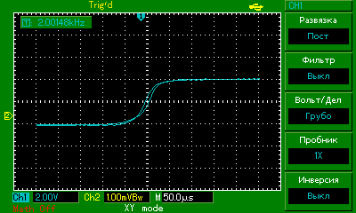
Рис. 11.7. Кривая намагничивания кольца К14.9х14.5х1 из аморфной ленты на основе кобальта после отжига на частоте 2 кГц, близкая к предельной. Цена деления по горизонтали 2 Э ≈ 159.2 А/м. Цена деления по вертикали 0.4 Тл. Сигнал на выходе ФНЧ US ≈ 1 мВ.
Индукция насыщения образца BS:

Для US = 1 мВ, R2 = 1.5 кОм, C1 = 5 мкФ, NS = 94 витков, H = 1 мм, D2 = 14.9 мм, D1 = 14.5 мм:
Кольцо из аморфной ленты на основе кобальта после отжига имеет существенно лучшие магнитные характеристики, в частности, коэрцитивная сила уменьшилась примерно вдвое, а петля гистерезиса стала менее прямоугольной. Магнитная проницаемость на частоте 2 кГц m ≈ 2800 (магнитная индукция 0.28 Тл = 2800 Гс достигается при напряженности магнитного поля 1 Э), т. е. несколько уменьшилась. В диапазоне напряженности магнитного поля -0.5 … +0.5 Э магнитная проницаемость (и относительная магнитная проницаемссть) составляет примерно 4000.
12. Кольцо типоразмера К4х2х2 из магнитомягкого феррита для помехоподавляющих фильтров
На кольце типоразмера К4х2х2 из магнитомягкого никель-цинкового феррита, используемого для целей помехоподавления, намотана обмотка возбуждения L1 7.5 витков проводом ПЭВ-2 0.27 мм индуктивностью 50 мкГн и сигнальная обмотка L2 50 витков проводом ПЭВ-2 0.1 мм индуктивностью 550 мкГн. Индуктивность измерена LC-метром VC6243 на частоте 1 кГц.
Напряженность возбуждаемого обмоткой, содержащей 7.5 витков, с током I магнитного поля HE внутри кольца К4х2х2 (вдоль средней линии) может быть определена по формуле:
Например, при токе 1 А напряженность магнитного поля HE ≈ 796 А/м.≈ 10 Э. Если взять резистор R1 сопротивлением 10 Ом, то при токе 1 А на нем будет падать напряжение 10 В, т. е. 1 В напряжения на шкале осциллографа будет соответствовать 1 Э напряженности магнитного поля (или 79.6 А/м).
Цепь ФНЧ: R2 = 1.5 кОм (сопротивление измерено мультиметром APPA-107N), C1 = 5 мкФ (емкость измерена LC-метром VC6243 на частоте 1 кГц).
Кривые намагничивания кольца К4х2х2 для ряда частот 1 кГц, 2 кГц, 5 кГц, 10 кГц, 15 кГц, 20 кГц представлены на рис. 12.1 – 12.7.
Рис. 12.1. Кривая намагничивания кольца К4х2х2 на частоте 1 кГц. Цена деления по горизонтали 0.5 Э ≈ 39.8 А/м. Цена деления по вертикали 0.075 Тл. Коэрцитивная сила по индукции HCB ≈ 0.225 Э ≈ 17.9 А/м.
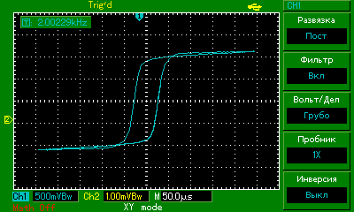
Рис. 12.2. Кривая намагничивания кольца К4х2х2 на частоте 2 кГц. Цена деления по горизонтали 0.5 Э ≈ 39.8 А/м. Цена деления по вертикали 0.075 Тл. Коэрцитивная сила по индукции HCB ≈ 0.25 Э ≈ 19.9 А/м.
Рис. 12.3. Кривая намагничивания кольца К4х2х2 на частоте 5 кГц. Цена деления по горизонтали 0.5 Э ≈ 39.8 А/м. Цена деления по вертикали 0.075 Тл. Коэрцитивная сила по индукции HCB ≈ 0.325 Э ≈ 25.9 А/м.
Рис. 12.4. Кривая намагничивания кольца К4х2х2 на частоте 10 кГц. Цена деления по горизонтали 0.5 Э ≈ 39.8 А/м. Цена деления по вертикали 0.075 Тл. Коэрцитивная сила по индукции HCB ≈ 0.4 Э ≈ 31.8 А/м.
Рис. 12.5. Кривая намагничивания кольца К4х2х2 на частоте 15 кГц. Цена деления по горизонтали 0.5 Э ≈ 39.8 А/м. Цена деления по вертикали 0.075 Тл. Коэрцитивная сила по индукции HCB ≈ 0.45 Э ≈ 35.8 А/м.
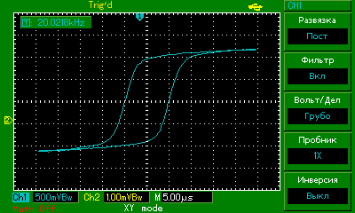
Рис. 12.6. Кривая намагничивания кольца К4х2х2 на частоте 20 кГц. Цена деления по горизонтали 0.5 Э ≈ 39.8 А/м. Цена деления по вертикали 0.075 Тл. Коэрцитивная сила по индукции HCB ≈ 0.5 Э ≈ 39.8 А/м.
Рис. 12.7. Кривая намагничивания кольца К4х2х2 на частоте 2 кГц, близкая к предельной. Цена деления по горизонтали 2 Э ≈ 159.2 А/м. Цена деления по вертикали 0.075 Тл. Сигнал на выходе ФНЧ US ≈ 2.4 мВ.
Индукция насыщения образца BS:

Для US = 2.4 мВ, R2 = 1.5 кОм, C1 = 5 мкФ, NS = 50 витков, H = 2 мм, D2 = 4 мм, D1 = 2 мм:
С увеличением рабочей частоты с 1 кГц до 20 кГц значение коэрцитивной силы возрастает с 0.225 Э до 0.5 Э. Также возрастает напряженность поля, требуемая для достижения насыщения сердечника. На частоте 10 кГц она должна быть не менее 1.5 Э, что соответствует МДС не менее 2 А ∙ витков. Магнитная проницаемость на частоте 2 кГц m ≈ 3000.
13. Кольцо типоразмера К6х3х2 из магнитомягкого феррита для помехоподавляющих фильтров
На кольце типоразмера К6х3х2 из магнитомягкого феррита, используемого для целей помехоподавления, намотана обмотка возбуждения L1 11 витков проводом ПЭВ-2 0.27 мм индуктивностью 175 мкГн и сигнальная обмотка L2 50 витков проводом ПЭВ-2 0.1 мм индуктивностью 3.14 мГн. Индуктивность измерена LC-метром VC6243 на частоте 1 кГц.
Напряженность возбуждаемого обмоткой, содержащей 11 витков, с током I магнитного поля HE внутри кольца К6х3х2 (вдоль средней линии) может быть определена по формуле:
Например, при токе 1 А напряженность магнитного поля HE ≈ 778 А/м.≈ 10 Э. Если взять резистор R1 сопротивлением 10 Ом, то при токе 1 А на нем будет падать напряжение 10 В, т. е. 1 В напряжения на шкале осциллографа будет почти соответствовать 1 Э напряженности магнитного поля (или 79.6 А/м).
Цепь ФНЧ: R2 = 1.5 кОм (сопротивление измерено мультиметром APPA-107N), C1 = 5 мкФ (емкость измерена LC-метром VC6243 на частоте 1 кГц).
Кривые намагничивания кольца К6х3х2 для ряда частот 1 кГц, 2 кГц, 5 кГц, 10 кГц, 15 кГц, 20 кГц представлены на рис. 13.1 – 13.7.
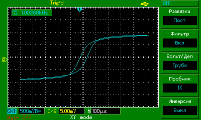
Рис. 13.1. Кривая намагничивания кольца К6х3х2 на частоте 1 кГц. Цена деления по горизонтали 0.5 Э ≈ 39.8 А/м. Цена деления по вертикали 0.25 Тл. Коэрцитивная сила по индукции HCB ≈ 0.15 Э ≈ 11.9 А/м.
Рис. 13.2. Кривая намагничивания кольца К6х3х2 на частоте 2 кГц. Цена деления по горизонтали 0.5 Э ≈ 39.8 А/м. Цена деления по вертикали 0.25 Тл. Коэрцитивная сила по индукции HCB ≈ 0.2 Э ≈ 15.9 А/м.
Рис. 13.3. Кривая намагничивания кольца К6х3х2 на частоте 5 кГц. Цена деления по горизонтали 0.5 Э ≈ 39.8 А/м. Цена деления по вертикали 0.25 Тл. Коэрцитивная сила по индукции HCB ≈ 0.25 Э ≈ 19.9 А/м.
Рис. 13.4. Кривая намагничивания кольца К6х3х2 на частоте 10 кГц. Цена деления по горизонтали 0.5 Э ≈ 39.8 А/м. Цена деления по вертикали 0.25 Тл. Коэрцитивная сила по индукции HCB ≈ 0.35 Э ≈ 27.9 А/м.
Рис. 13.5. Кривая намагничивания кольца К6х3х2 на частоте 15 кГц. Цена деления по горизонтали 0.5 Э ≈ 39.8 А/м. Цена деления по вертикали 0.25 Тл. Коэрцитивная сила по индукции HCB ≈ 0.4 Э ≈ 31.8 А/м.
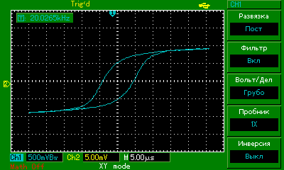
Рис. 13.6. Кривая намагничивания кольца К6х3х2 на частоте 20 кГц. Цена деления по горизонтали 0.5 Э ≈ 39.8 А/м. Цена деления по вертикали 0.25 Тл. Коэрцитивная сила по индукции HCB ≈ 0.45 Э ≈ 35.8 А/м.
Рис. 13.7. Кривая намагничивания кольца К6х3х2 на частоте 2 кГц, близкая к предельной. Цена деления по горизонтали 2 Э ≈ 159.2 А/м. Цена деления по вертикали 0.25 Тл. Сигнал на выходе ФНЧ US ≈ 10 мВ.
Индукция насыщения образца BS:

Для US = 10 мВ, R2 = 1.5 кОм, C1 = 5 мкФ, NS = 50 витков, H = 2 мм, D2 = 6 мм, D1 = 3 мм:
С увеличением рабочей частоты с 1 кГц до 20 кГц значение коэрцитивной силы возрастает с 0.15 Э до 0.45 Э. Также возрастает напряженность поля, требуемая для достижения насыщения сердечника. На частоте 10 кГц она должна быть не менее 1.5 Э, что соответствует МДС не менее 2 А ∙ витков. Магнитная проницаемость на частоте 2 кГц m ≈ 5000.
14. Заключение
В таблице 14.1 приведены некоторые результаты проведенных испытаний для всех образцов.
Таблица 14.1. Магнитные параметры для различных колец из магнитомягкого материала.
|
Образец |
Коэрцитивная сила HCB на частоте 2 кГц, Э |
Коэрцитивная сила HCB на частоте 10 кГц, Э |
Магнитная индукция насыщения BS на частоте 2 кГц, Тл |
Магнитная проницаемость m на частоте 2 кГц |
|
К10х6х3 феррит 3000НМ |
0.25 |
0.3 |
0.425 |
3000 |
|
К12х8х3 феррит 2000НМ |
0.2 |
0.25 |
0.425 |
3000 |
|
К12х8х3 феррит 2000НМ с отжигом |
0.55 |
0.6 |
0.34 |
920 |
| К4х2х2 феррит | 0.25 | 0.4 | 0.18 | 3000 |
| К6х3х2 феррит | 0.2 | 0.35 | 0.5 | 5000 |
|
К11х10х5 пермаллой |
1.0 |
1.4 |
0.975 |
2500 |
| К12х11х5 отожженный пермаллой | 1.1 | 1.5 | 0.900 | 2250 |
| К14.9х14.5х1 аморфная лента на основе кобальта (аналог VAC6025) шириной 1 мм толщиной 20 мкм | 0.15 | 0.2 | 0.4 | 3200 |
|
К14.9х14.5х2 аморфная лента на основе кобальта (аналог VAC6025) шириной 2 мм толщиной 20 мкм |
0.15 | 0.2 | 0.4 | 3600 |
|
К14.9х14.5х1 аморфная лента на основе кобальта (аналог VAC6025) шириной 1 мм толщиной 20 мкм после отжига при температуре 270 0C в течение 2-х часов |
0.05 | 0.15 | 0.4 | 2800 |
Из всех испытанных образцов наиболее предпочтительной для изготовления феррозонда является аморфная лента на основе кобальта (аналог VAC6025), подвергнутая после намотки в кольцо 2-х часовому отжигу при температуре 270 0C. Несколько похуже выглядит та же лента без отжига, а за ней следует ферритовое кольцо К12х8х3 2000НМ, т. к. оно имеет небольшое значение коэрцитивной силы, большую магнитную проницаемость, гладкую петлю гистерезиса с небольшой площадью. Если требуется уменьшить размер феррозонда, то можно использовать ферритовое кольцо К10х6х3 3000НМ или кольцо К6х3х2. Последнее кольцо, несмотря на то, что оно предназначено для использования в помехоподавляющих фильтрах, имеет весьма неплохие параметры. Ферритовое кольцо типоразмера К4х2х2, также предназначенное для использования в помехоподавляющих фильтрах, несмотря на скромные характеристики, в принципе позволяет в еще большей степени миниатюризировать феррозонд.
В дальнейшем предполагается провести аналогичное изучение новых магнитомягких материалов в форме колец по мере их доступности.
15. Соотношения между единицами измерений
В соответствии с соотношениями между напряженностью магнитного поля H и магнитной индукцией B в вакууме [8]:
где m0 = 4 p ∙ 10-7 Гн/м – магнитная постоянная, а также учитывая соотношение между единицами измерений систем СИ и СГС:
1 Тл = 10000 Гс
1 Гс ↔ 1 Э
можно записать соотношения между различными единицами измерений магнитных величин, например:
79.6 А/м.≈ 1 Э ↔ 1
Гс = 100 мкТл
7.96 А/м.≈ 0.1 Э ↔ 0.1 Гс = 10 мкТл
0.796 А/м.≈ 0.01 Э ↔ 0.01 Гс = 1 мкТл
1 А/м.≈ 12.57 мЭ ↔ 12.57 мГс = 1.257 мкТл
0.1 А/м.≈ 1.257 мЭ ↔ 1.257 мГс = 125.7 нТл
1 мА/м.≈ 12.57 мкЭ ↔ 12.57 мкГс = 1.257 нТл
Ссылки:
21.11.2018
23.11.2018
25.11.2018
29.11.2018
29.07.2021
02.08.2021
14.09.2024
Альтернативные источники
энергии
Компьютеры и
Интернет
Магнитные поля
Механотронные системы
Перспективные
разработки
Электроника и
технология